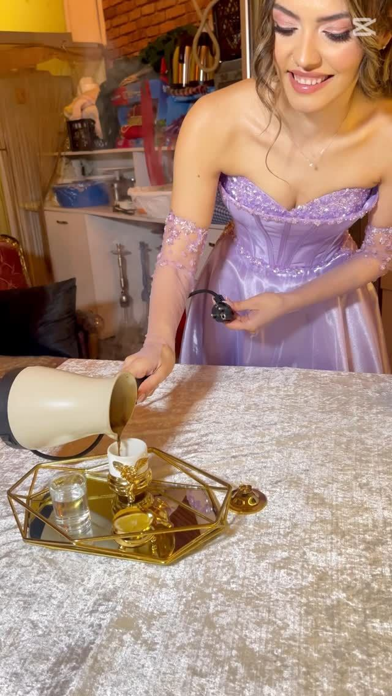
Kız isteme
Geleneksel kahve ikramıyla, iki ailenin ilk buluşması için sıcak ve şık bir masa.
Fiyat al →Türkiye'nin ilk vintage kız isteme ve davet mekânı. Kız isteme, söz, nişan, kına, bride to be ve doğum günü için süsleme, ikram ve organizasyon tek elden, her bütçeye uygun.
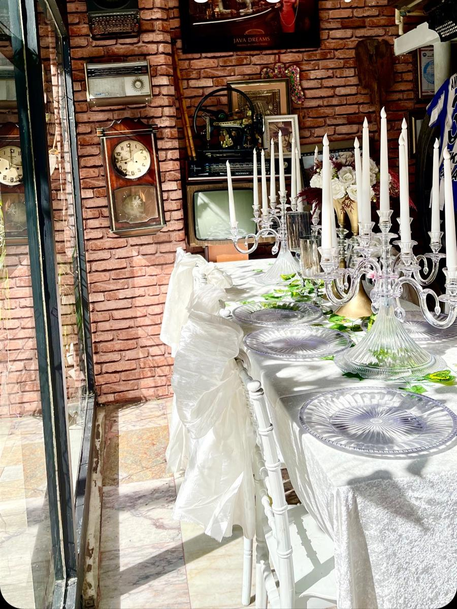
Mekân, süsleme ve ikram bizden. Siz sadece sevdiklerinizi davet edin.

Geleneksel kahve ikramıyla, iki ailenin ilk buluşması için sıcak ve şık bir masa.
Fiyat al →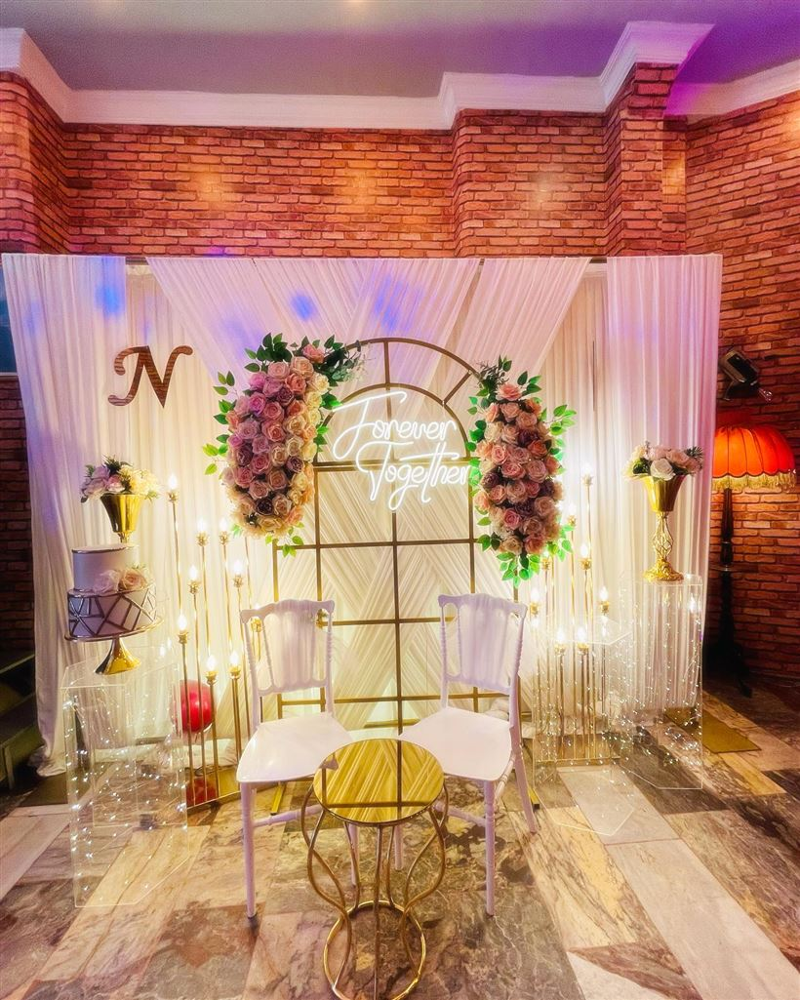
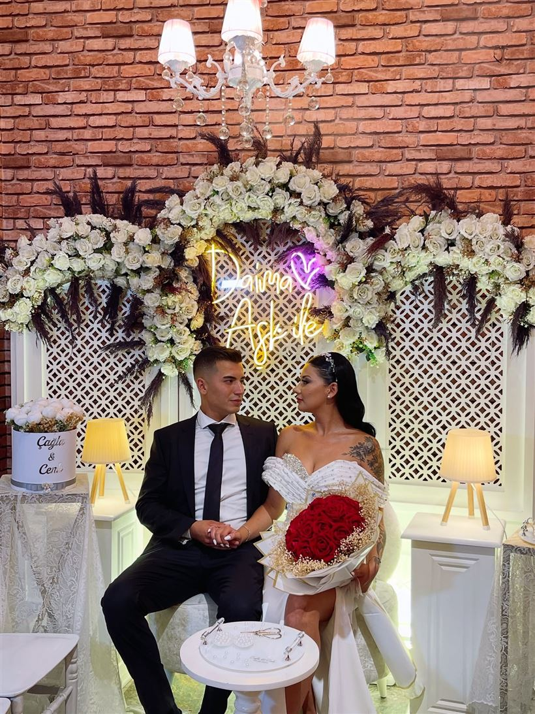
Çiçek kemeri, neon yazı ve avizeli tuğla duvarlar arasında nişan töreni ve kutlaması.
Fiyat al →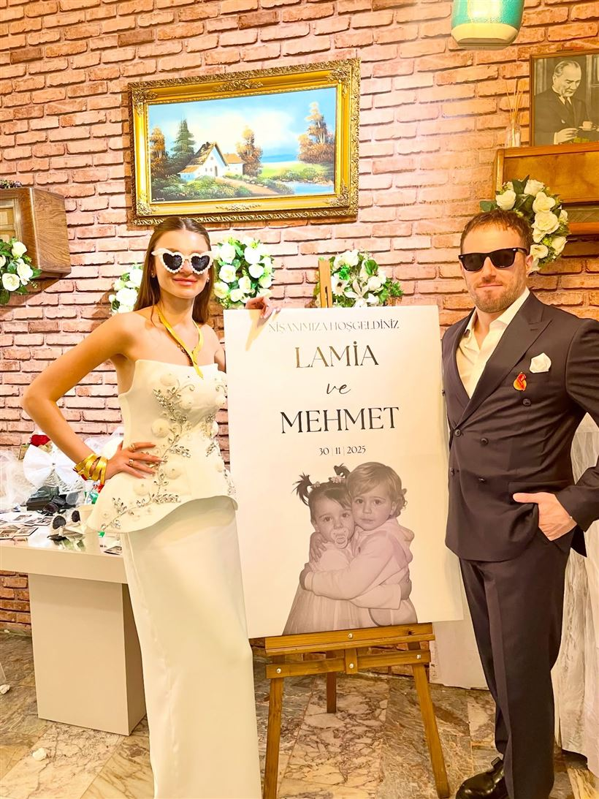
Evde nişan ya da kız isteme yapmanın telaşını biliyoruz. Müze Cafe'de mekân hazır, süsleme hazır, ikram hazır. Siz sadece gelin.
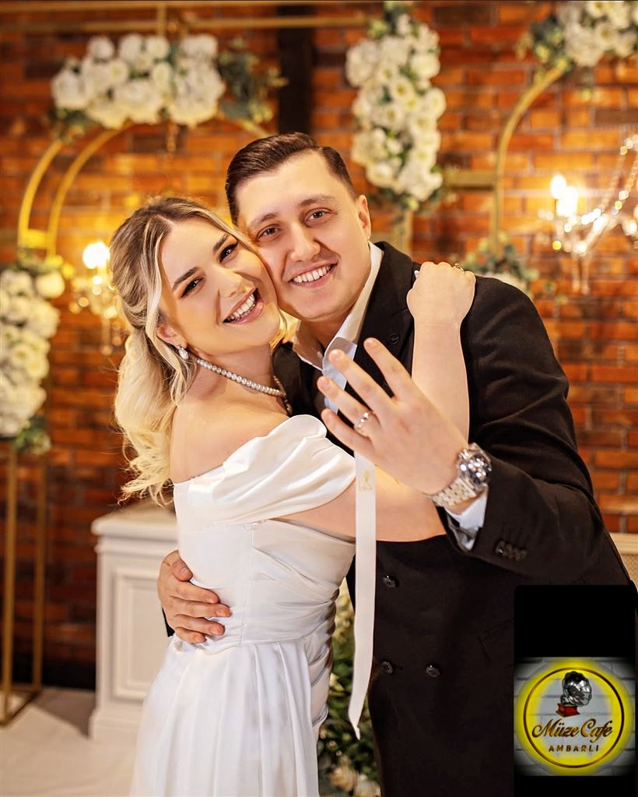
İlk mesajdan o güne kadar her adımda yanınızdayız.
Organizasyon türünü, tarihi ve kişi sayısını WhatsApp'tan iletin.
Bütçenize göre süsleme ve ikram seçeneklerini birlikte belirleyelim.
Ambarlı'daki mekânımıza uğrayın, masanızı yerinde görün.
O gün siz sadece misafirlerinizi karşılayın, kalan her şey bizden.
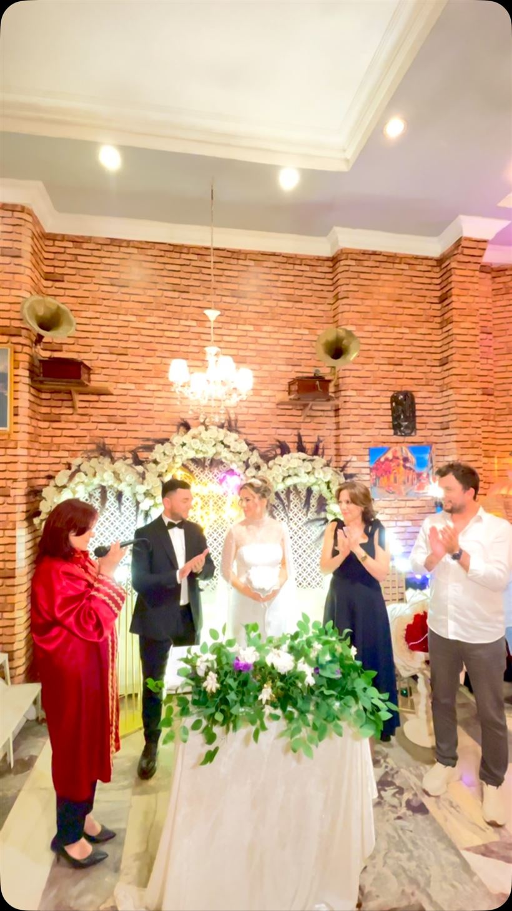
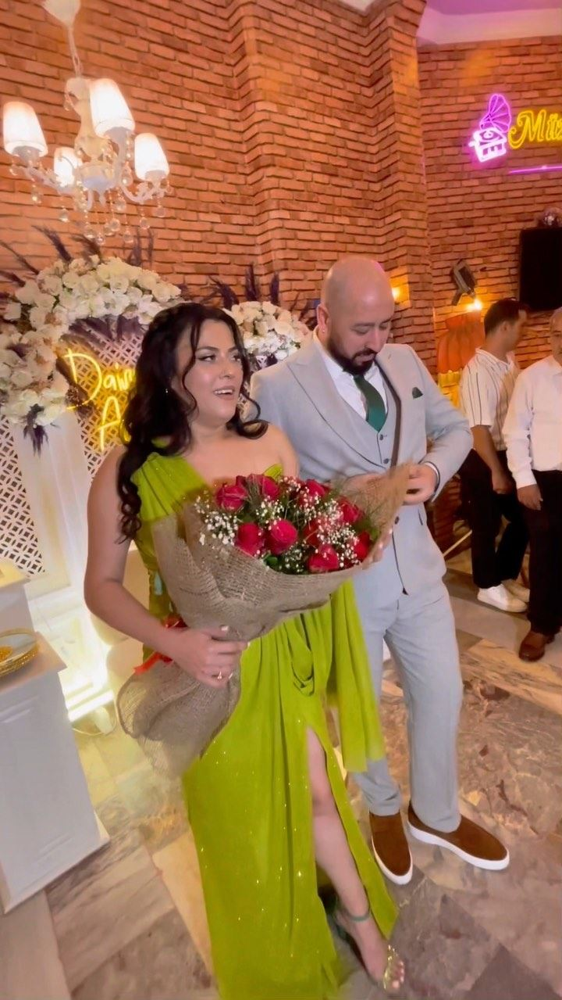
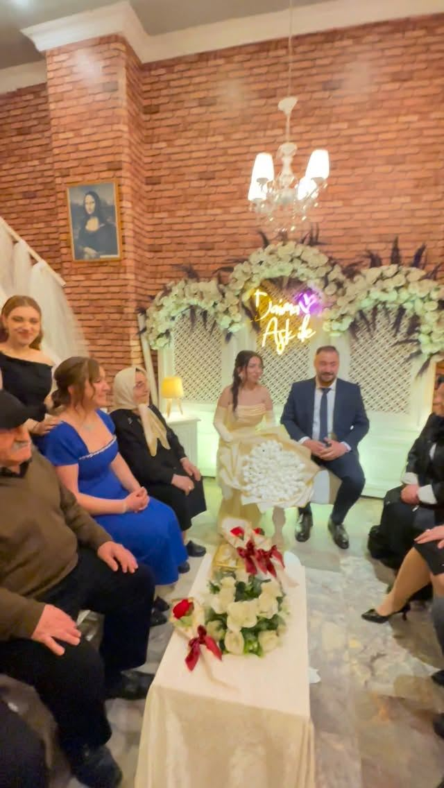
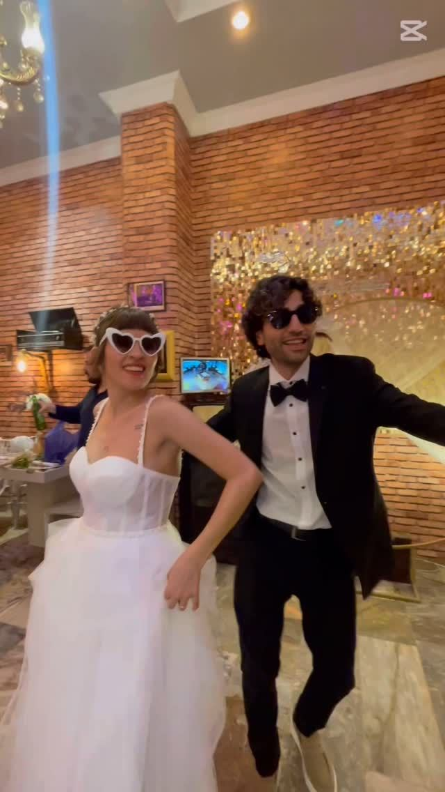
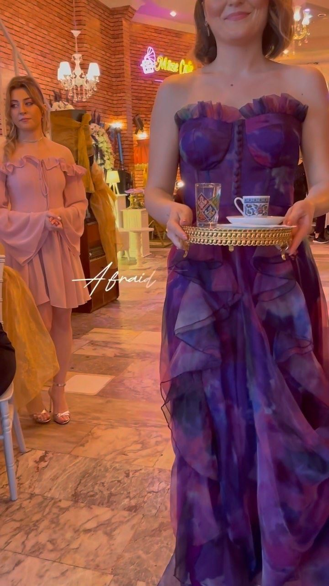
Daha fazlası Instagram'da: @muzecafeambarli
Bride to be organizasyonu için Google yorumları aracılığıyla bulduk ve çok memnun kaldık. Organizasyon, yemekler, ambiyans; her açıdan evde rahatlığı hissettiren çok güzel bir mekân.
Nişan, söz ve isteme bir arada organizasyon gerçekleştirdik. Her şey o kadar güzeldi ki bütün misafirlerimiz ikramlara bayıldı. Beklediğimden fazlası oldu.
Doğum günü kutlaması için anlaştık. Süslemesi, organizasyonu ve ikramları tek kelimeyle harikaydı. Kesinlikle tereddüt etmeyin.
Müze Cafe’de nişan yaptık. İkramlar, sunumlar, süsleme ve vintage dekoru çok sıra dışı ve keyifliydi. Sıcacık bir aile ortamı.
Arkadaşımızın bekârlığa vedası için buradaydık; her şey çok samimi ve çok güzeldi. Mekân sahibi, eşi ve çalışanlar bize her konuda yardımcı oldular. İkramlıklar da muazzamdı.
Oğlumun asker kınasını Müze Cafe’de gerçekleştirdik, çok güzel ve eğlenceli oldu. Ebru Hanım’a, eşine ve tüm çalışanlarına teşekkürlerimizi sunarız.
Doğum günümüzden çok memnun kaldık. Gerek ikramlar gerek garsonların ilgisi harikaydı. Organizasyonlarımızda her zaman öncelikli tercihimiz olacaksınız.
Özellikle hafta sonları için erken ayırtmanızı öneririz. Formu doldurun, size özel fiyatla WhatsApp'tan dönelim.